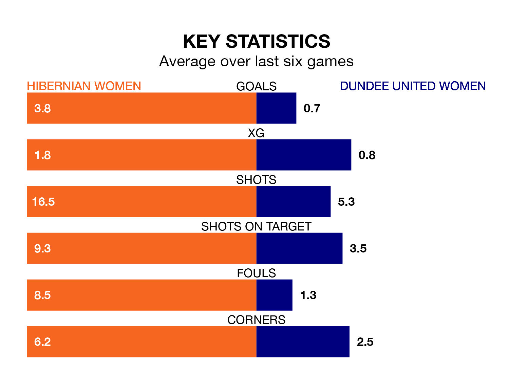

Relegation candidates Dundee United Women face a challenge away against high-flying Hibernian Women at the Meadowbank Stadium on Wednesday.
Dundee United Women are ninth in the SWPL 1 table, and have picked up three wins and one draw in their 18 games to date.
Hibs, meanwhile, are fourth in the standings with 35 points, having won 11 and drawn two, and are 17 points behind table-toppers Rangers W.
Hibernian are in fantastic form in SWPL 1, with five wins and one loss from their last six games.
With no wins and six losses over that period, Dundee United's form is much worse – they have taken no points from 18, compared to Hibs's 15.
With 16 goals in 18 games so far this season, the visitors are the league's joint-third-lowest scorers with 0.9 goals per game. And they are conceding more than average, letting in 69 goals at a rate of 3.8 per game.
The home team, meanwhile, are above average scorers, with 3.0 goals per game, compared to a league average of 2.2. They have conceded 1.4 goals per game.
In Jorian Baucom, Hibernian have the league's sharpest shooter so far this season. She has notched 18 goals in 18 appearances.
Her goal rate of one every 72 minutes is much quicker than that of Rachel Todd, Dundee United's top scorer with a goal every 265 minutes, and a total of six goals in 18 games.
In the last five years, Hibernian and Dundee United have played each other on five occasions. Hibernian won four of them and they drew once.
On average, Hibs scored 4.8 goals and Dundee United 0.8 in those matches.
Their last meeting was on November 12, when Hibernian won 7-0 at home.
Hibernian's last match was on Sunday, a 5-0 win against Motherwell Women, with Baucom (two), Eilidh Adams (two) and Shannon Leishman getting the goals for Hibs.
Dundee United lost 4-1 against Hamilton Academical last time out, also on Sunday, with Abbie Cusack on the scoresheet.
Updated: 13:20 (UTC), 29/01/24